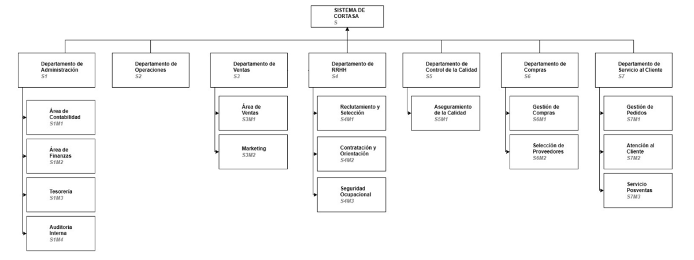
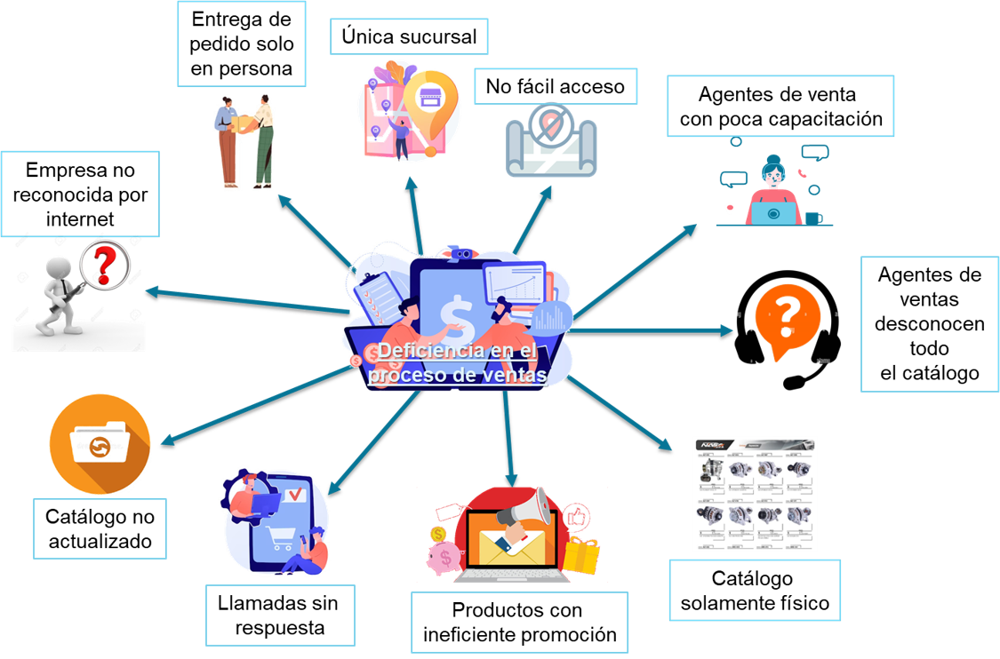
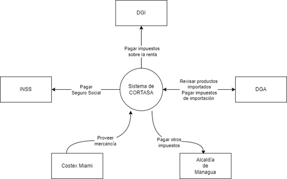
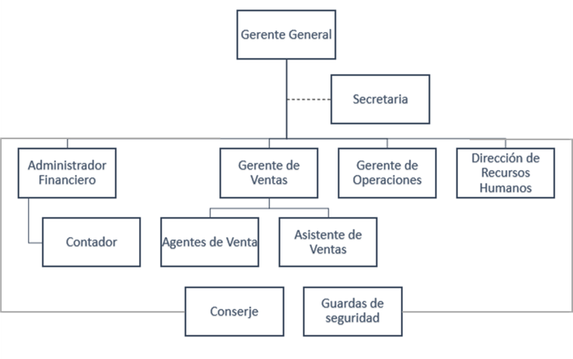

Análisis Preliminar
Diagrama de Desagregacion
Figura Rica
Diagrama de desagreacion
Organigrama de la Empresa
| Sección | Subsección | Descripción |
|---|---|---|
| S1 | S1M1 | Registro, clasificación y análisis de las transacciones financieras. |
| S1M2 | Gestión y control de los recursos financieros incluyendo la planificación, análisis, inversiones, presupuestos y toma de decisiones relacionadas con el dinero y los activos de la empresa. | |
| S1M3 | Administración y control de los flujos de efectivo. | |
| S1M4 | Evaluación y mejora de los controles internos, la gestión de riesgos y los procesos operativos. | |
| S2 | Supervisión y administración de las actividades diarias. | |
| S3 | S3M1 | Venta de los repuestos de maquinaria pesada. |
| S3M2 | Investigación de mercado, segmentación de clientes, fijación de precios, promoción y distribución. | |
| S4 | S4M1 | Identificación, atracción y elección de candidatos para puestos vacantes. |
| S4M2 | Formalización del acuerdo laboral con un candidato seleccionado. | |
| S4M3 | Aseguramiento de un entorno de trabajo saludable para los empleados. | |
| S5 | S5M1 | Implementación de controles de calidad. |
| S6 | S6M1 | Adquisición de los repuestos de maquinaria pesada. |
| S6M2 | Evaluación y elección de los proveedores que suministran los repuestos. | |
| S7 | S7M1 | Recepción, registro de los pedidos y facturación. |
| S7M2 | Respuesta a consultas, resolución de problemas y asistencia de compra. | |
| S7M3 | Servicio de garantía, atención a consultas y gestión de devoluciones. |
Arbol de Problemas